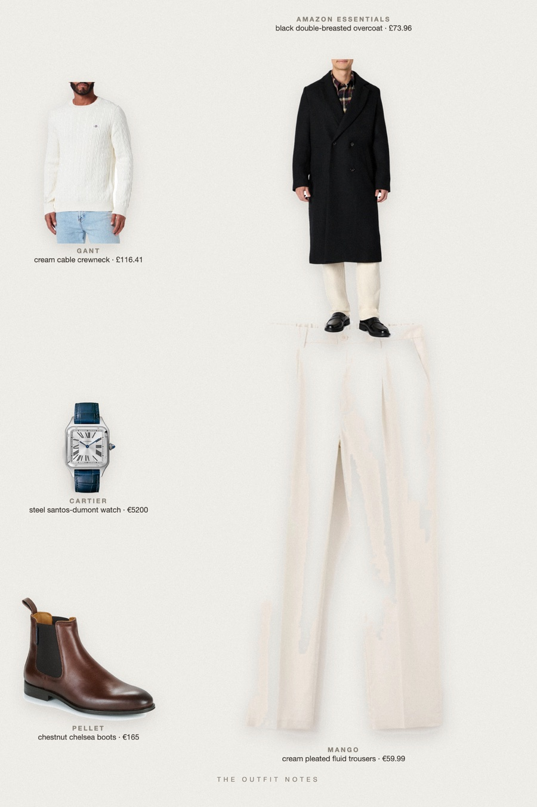
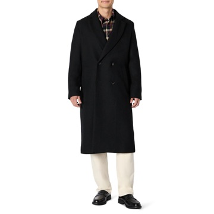

Mayfair Black
long coat, cream knit

Old money winter outfit for men: a black double-breasted wool-blend long coat over a GANT cream cable-knit, Mango pleated fluid trousers and Pellet chestnut chelsea boots. A Cartier Santos-Dumont on the wrist keeps it quiet luxury. Classy cold-weather look for a London winter.
The pieces
This page contains affiliate links: if you buy through them, we may earn a commission at no extra cost to you. Disclosure.

Amazon Essentials
Black double-breasted overcoat
Shop GANT
GANT
Cream cable crewneck
Shop Mango
Mango
Cream pleated fluid trousers
Shop Pellet
Pellet
Chestnut chelsea boots
Shop Cartier
Cartier
Steel santos-dumont watch
Shop
Prices are indicative, taken when the look was published, and may have changed. Pictures of the outfit are AI-generated illustrations of real products; the product photos are the retailers' own.
Published 2 October 2026.